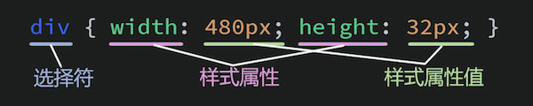

css基础
css简介
CSS，全称“Cascading Style Sheets （层叠样式表）”，用于设置HTML标签的样式，它的基本结构如下：

引入方式
使用样式表主要 有4种方式，即，“行内样式”、“内嵌样式”、“外链样式”、“导入式”。
1、行内样式
是将 “style” 作为一个标签的属性，然后通过它的值来设置样式。写法如下：
<div style="width: 300px; height: 300px; background-color: red;"></div>
2、内嵌样式
是将样式作为个标签放置于\
标签对以内，让浏览器在加载完成其它基本信息后，首先将样式给渲染出来。标签名为“\